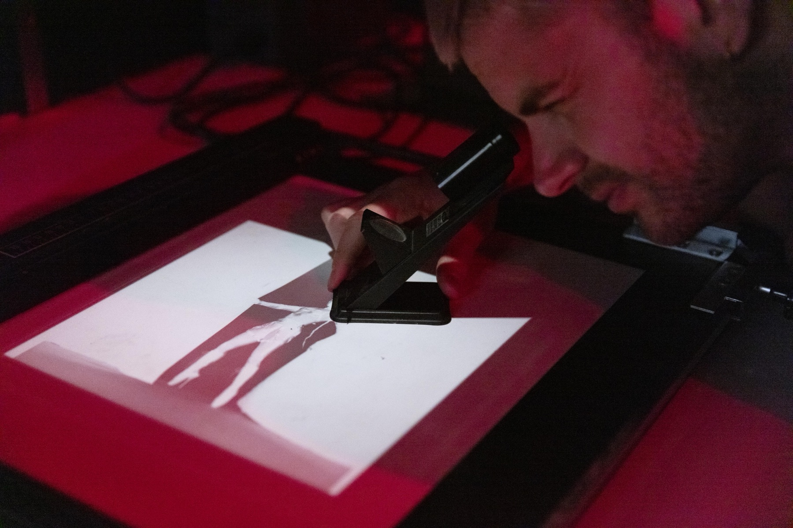
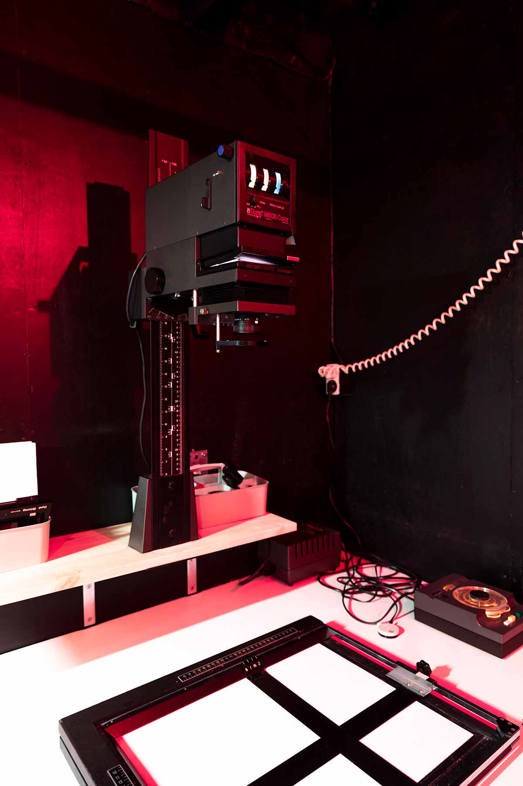

Van negatief tot afdruk
Ontdek de magie van analoog printen bij DOKA Rotterdam. Tijdens deze praktische cursus van vier uur leer je hoe je je eigen zwart-wit negatieven omzet in een analoge fotoafdruk. In een kleine groep van maximaal 2 à 3 deelnemers krijg je persoonlijke begeleiding en alle ruimte om te experimenteren met licht, contrast en belichting.
Leer printen in de donkere kamer
Een goed negatief is pas het begin. In de donkere kamer ontdek je hoe je met licht, papier en verschillende technieken een foto tot leven brengt.
Tijdens deze cursus doorloop je stap voor stap het printproces. Je maakt kennis met de apparatuur, leert je negatieven beoordelen en ontdekt hoe je de juiste belichting bepaalt. Met contactvellen en teststroken onderzoek je hoe verschillende instellingen het uiteindelijke beeld beïnvloeden.
Vervolgens maak je je eigen zwart-witafdruk. Je leert hoe je het beeld ontwikkelt, spoelt en droogt, en hoe je met kleine aanpassingen het resultaat verder kunt verfijnen.
We werken in een kleine groep van maximaal 2 à 3 deelnemers, zodat er volop ruimte is voor persoonlijke uitleg, vragen en experiment. Je werkt met je eigen zwart-witnegatieven en gaat naar huis met een zelfgemaakte afdruk.

Wat ga je leren?
- Kennismaken met de vergroter, ontwikkelschalen en andere apparatuur in de doka
- Je negatieven beoordelen en een beeld selecteren om af te drukken
- Een contactvel maken om verschillende beelden te vergelijken
- Werken met teststroken en de juiste belichtingstijd bepalen
- Het contrast en de belichting van je afdruk beïnvloeden
- Je afdruk ontwikkelen, spoelen en drogen
Voor wie is deze cursus?
Deze cursus is bedoeld voor iedereen die meer uit hun analoge negatieven wil halen en zelf wil leren afdrukken in de donkere kamer.
- Analoge fotografen die hun eigen negatieven willen afdrukken
- Beginners die kennis willen maken met het printproces
- Fotografen die meer controle willen krijgen over contrast en belichting
- Creatieven die hun beelden op een ambachtelijke manier willen vormgeven
Je hebt geen ervaring met de donkere kamer nodig. We begeleiden je stap voor stap bij het maken van je eerste afdrukken.
Waarom deze cursus?
- Kleinschalig: maximaal 2 à 3 deelnemers
- Vier uur praktijk: alle aandacht voor het printproces
- Persoonlijke begeleiding: leren door te doen en te experimenteren
- Je eigen negatieven: werk met beelden die je zelf hebt gefotografeerd
- Van negatief tot print: doorloop het volledige afdrukproces
- Zwart-wit en volledig analoog: werken met licht, papier en chemie
- Een tastbaar resultaat: neem je eigen gemaakte afdrukken mee naar huis
Programma van de cursus
-
09:30 – 10:00
🔴 Introductie in de doka
We starten met een kennismaking met de donkere kamer en de apparatuur. Je leert hoe de vergroter werkt en maakt kennis met de verschillende materialen en stappen van het analoge printproces.
-
10:00 – 10:45
🖼️ Negatieven selecteren & contactvel maken
Je bekijkt je eigen zwart-witnegatieven en kiest een beeld om af te drukken. Vervolgens maak je een contactvel, zodat je verschillende beelden kunt beoordelen en een goede keuze kunt maken voor je uiteindelijke print.
-
10:45 – 11:30
💡 Teststroken, belichting & contrast
Je leert hoe je met teststroken de juiste belichtingstijd bepaalt. We onderzoeken hoe belichting en contrast het eindresultaat beïnvloeden en hoe je de instellingen van de vergroter aanpast om het gewenste beeld te krijgen.
-
11:30 – 12:30
🧪 Je eigen foto afdrukken
Tijd om zelf aan de slag te gaan! Je maakt een zwart-witafdruk van je eigen negatief en leert hoe je het fotopapier ontwikkelt, spoelt en droogt. Ook maak je kennis met technieken zoals doordrukken en tegenhouden, waarmee je specifieke delen van je foto lichter of donkerder kunt maken.
-
12:30 – 13:00
🖤 Resultaten bekijken & afronden
We bekijken de gemaakte afdrukken en bespreken de resultaten. Je krijgt tips om verder te experimenteren met analoog printen en gaat naar huis met je eigen zwart-witafdruk.

Kies jouw zondag
Alle cursussen vinden plaats op zondag van 09:30 tot 13:00.
Nieuwe data volgen binnenkort. Mail ons via info@doka-rotterdam.nl.
Praktische informatie
- Eerstvolgende cursus
- Zondag 29 november 2026
- Tijd
- 09:30 – 13:00
- Duur
- 4 uur
- Taal
- Nederlands / Engels
- Locatie
- DOKA Rotterdam, bij Studio Rik Versteeg (Hildegardisstraat 15 · 3036 NS Rotterdam)
- Groepsgrootte
- Maximaal 3 deelnemers
- Meenemen
- Eigen zwart-witnegatieven die geschikt zijn voor de aanwezige vergroter
- Fotopapier
- We gebruiken tijdens de cursus RC-papier; dit is niet inbegrepen. Je kunt het papier vooraf bij ons reserveren of zelf bestellen bij fotofilmfabriek.nl.
- Begeleiding
- Introductie en persoonlijke ondersteuning gedurende de cursus
Wil je de magie van analoog printen zelf ervaren? Schrijf je in en ontdek hoe jouw negatieven tot leven komen — van negatief tot afdruk.
Korting via Werktuig PPO
Via Werktuig PPO kun je deze cursus met korting volgen. Bekijk de onderstaande link voor alle informatie over de spelregels en voorwaarden.